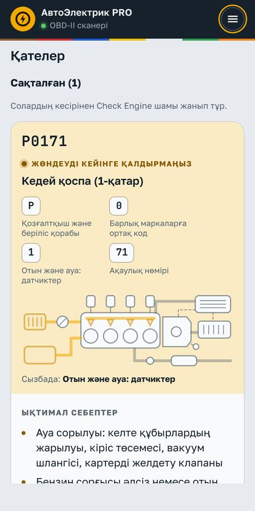
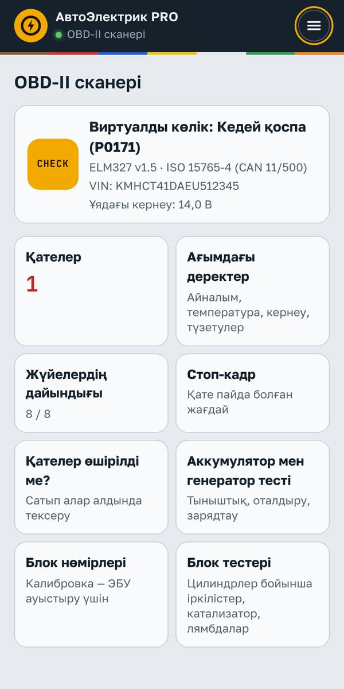
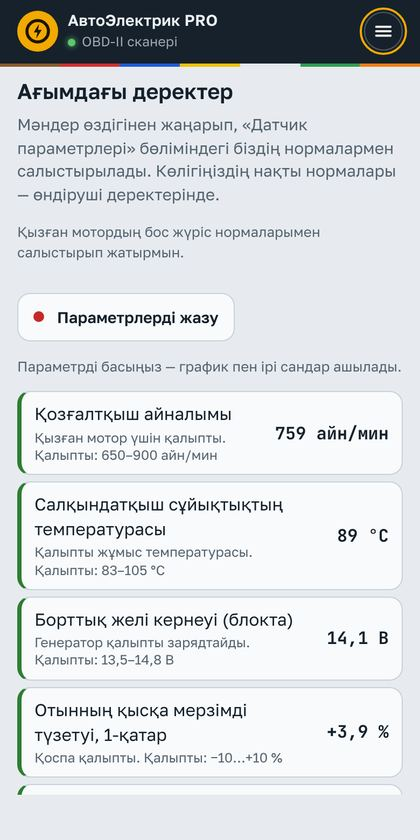
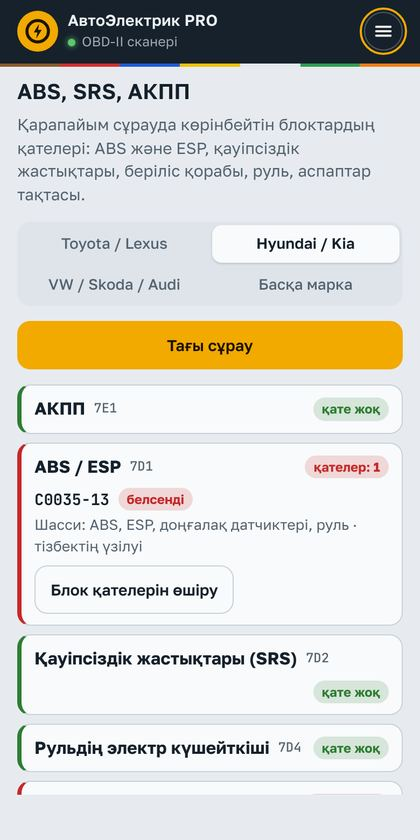
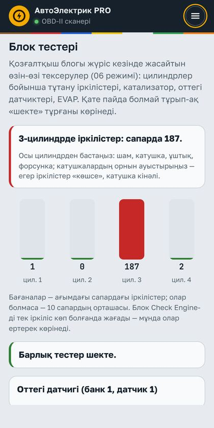
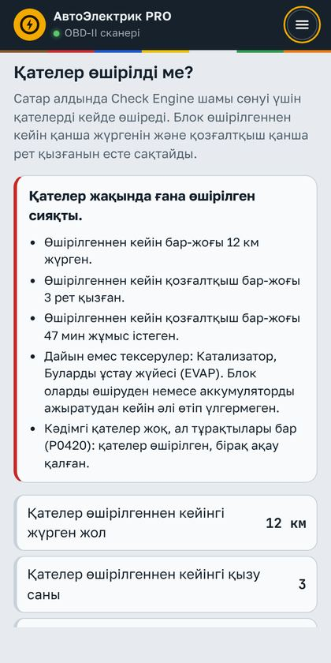
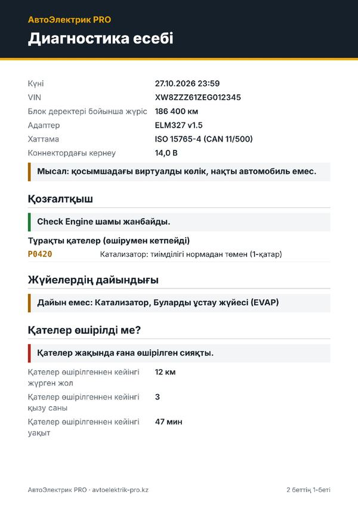
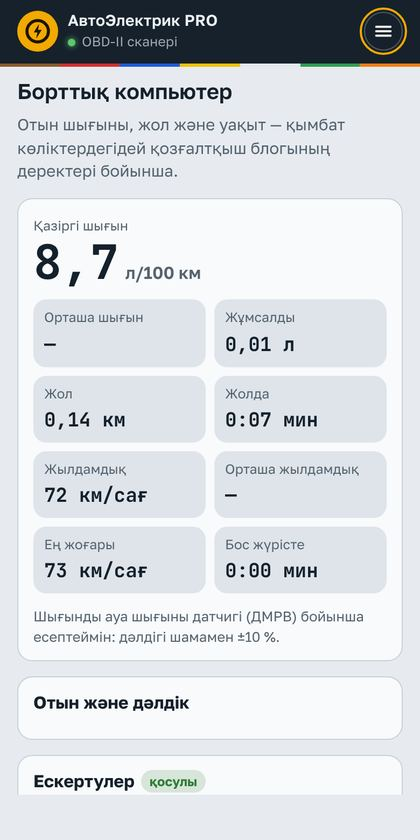
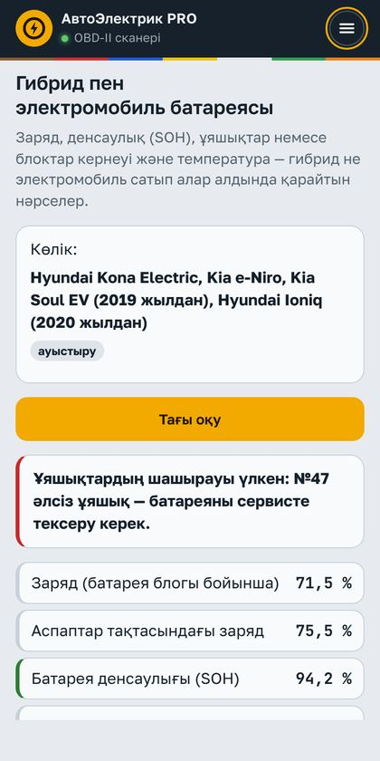

Түсіндірмесі бар қателер
Қозғалтқыштың сақталған, күтудегі және тұрақты қателері — түсінікті атауымен, себептерімен және жөндеудің алғашқы қадамымен.
OBD-II сканері · тегін
Android-қа арналған АвтоЭлектрик PRO қосымшасы: ELM327 адаптерін OBD-II ағытпасына салыңыз — қозғалтқыш, ABS, жастықтар және АКПП қателерін түсіндірмесімен және автоэлектриктен жөндеудің алғашқы қадамымен көріңіз. Тегін.

«Адаптерсіз байқап көру» виртуалды көлігіндегі қосымша экрандарының суреттері.

Қозғалтқыштың сақталған, күтудегі және тұрақты қателері — түсінікті атауымен, себептерімен және жөндеудің алғашқы қадамымен.

Айналым, температура, кернеу, түзетулер, ДМРВ — жанында жылыған қозғалтқыштың нормасы. Графиктер, ірі сандар, кестеге жазу.

ABS, қауіпсіздік жастықтары, беріліс қорабы, руль және аспаптар тақтасының қателері — Toyota/Lexus, Hyundai/Kia, VW/Skoda/Audi. Тек оқу және өшіру.

Блок тестері (06 режимі): қай цилиндр «үштейтіні» Check Engine жанбай тұрып-ақ көрінеді.

Көлікті сатып алар алдында: қателер өшірілгеннен кейін қанша жүрді және қозғалтқыш неше рет қызды, жүйелердің дайындығы, тұрақты қателер.

Дайын құжат: қателер, жүйелердің дайындығы, аккумулятор тесті, блок деректері бойынша жүріс. Сатып алушыға немесе клиентке жіберіңіз.

Қазіргі және орташа шығын, жол, уақыт, жылдамдық. Қызып кету, нашар зарядтау және жоғары айналым туралы дауыспен ескертеді.

Заряд, денсаулық (SOH), ұяшықтар немесе блоктар кернеуі: Hyundai/Kia EV, Toyota Prius, Nissan Leaf. Тек оқу.
Арзан ELM327 v2.1 көшірмелері жауаптарды жиі жоғалтады және ABS/SRS оқымайды. Қосымшада «Адаптерді тексеру» бар — ол сіздікінің не істей алатынын көрсетеді.
Иә. Қосымша да, сканердің барлық мүмкіндіктері де тегін. Тек ELM327 адаптері керек.
Адаптерге қосылу — тек Android қосымшасында. iPhone-да және браузерде сканерді виртуалды көлікте байқап көруге болады.
OBD-II ағытпасы бар бензин және дизель көліктері (шамамен 2001–2008 жылдан бастап). ABS, SRS және АКПП — CAN шинасындағы Toyota/Lexus, Hyundai/Kia, VW/Skoda/Audi. J1939 жүк көліктері — сынақ режимінде.
Жоқ: қосымша тек деректерді оқиды және стандартты командалармен қателерді өшіреді. Бағдарлама жазу, баптау және блоктарға жазу жоқ.
Иә: «Сканер» бөлімінде виртуалды көлік бар — жарамды және ақаулары бар: кедей қоспа, тұтану іркілістері, қызып кету, ABS қатесі, электромобиль және басқалар.
Қосымшаны Алматыдағы автоэлектрик Олег Дмитриев жасады (тәжірибесі 26 жыл). Сканердегі кеңестер — оның тәжірибесінен.